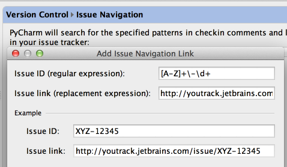
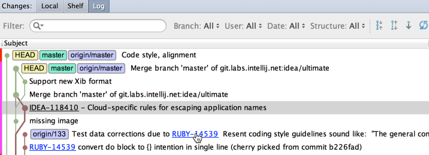

&productName; lets you jump from your check-in comment to an issue in your task tracker.
All you have to do is to define issue navigation patterns on the Version Control page of the Settings/Preferences dialog:

When you commit a changelist, and type the check-in comment, make sure it matches one of your issue navigation patterns. Later, when you browse through the changelists in the repository, such comments turn into hyperlinks:

Clicking a hyperlink brings you directly to an issue in your task tracker.